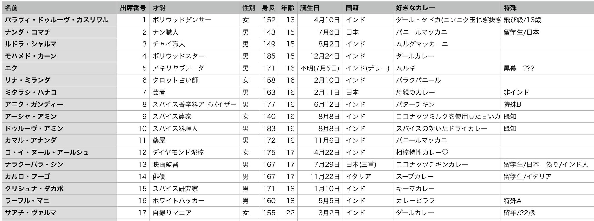

印度論破情報色々 【現実世界】 日本で起きた「人類史上最大最悪の絶望的事件」により世界が絶望に染まってしまった。 個人、国レベルで争いが絶えずこの世はまるでディストピア。世紀末になり希望なんてどこにもない。 だがインドは違ったようだ。 5年前、超高校級の絶望がおこしたコロシアイを真似てインドのアーシャ学園も同じことをした。 狭い空間で超高校級の生徒たちが無慈悲にも死んで行ってしまう……そんな光景をインド中に見せつけ絶望を誘おうとしたのだ。 そんな中、当時の生徒はありとあらゆる手を使って監視カメラを誤魔化し、偽物のコロシアイを演出して乗り切ってしまった。 その「偽物のコロシアイ」にインド中が歓声をあげた。 なんて面白いエンターテイメントなんだ！どんなボリウッド映画よりも面白い。毎年見たい！！！ 学園は絶望なんてどうでもよくなり、膨大な金を出してくれる政府と手を組んでコロシアイシミュレーションシステムを開発。 毎年、アーシャ学園入学生の意識データをコピーしてとりこみ1年かけてその年の生徒にふさわしい舞台を用意する。 ああ、これが楽しみで仕方がない。楽しい番組を見て、踊って、カレーを食べて、そのおかげで全インド人は希望に満ち溢れている！ 荒廃した他の国がうっかりインドを攻めたって大丈夫。希望を捨てないインド人はそんじょそこらの絶望なんかには負けはしない。 【コロシアイシミュレーション番組】 インドで大人気のテレビ番組「アーシャ学園のコロシアイ学園生活」！もちろんネット配信もされています！ アーシャ学園の２年生たちが繰り広げるドキドキのコロシアイ生活。 今期でなんとシーズン5！ おっとご安心ください。本当にコロシアイをしているわけではありませんよ？ 我が国が作った高精度なシステムにより学園内の様子を完全再現、そしてコロシアイをしていただくプレイヤーは全て本物の生徒の脳データから作られたAIでございます！ インド国民はみな、この番組を現実ではないと知った上で、現実にしか見えない映像で流れるスリリングなコロシアイを楽しんでいるのです。 もちろん、データを提供している生徒たちも、ですよ？ だって面白いじゃないですか。「もし自分たちがコロシアイをしたら」なんて状況をリアルな映像で楽しめるんですから。 さてさて、黒幕の準備は整ったみたいですね？今年の黒幕は◾️◾️！！ふふ、この世界の生徒には秘密ですよ？ それでは◾️◾️に惑わされる○期生の生徒たちの様子をご覧ください！ 【仮想世界】 コロシアイをする生徒たちが生活する、電子の中の世界。 最先端のコンピューターと膨大なデータ量でできており、現実世界と見分けがつかない風景を再現できる。 また、人間の思考感情を正確に再現したAIを複数動作させることができ、その世界にいる本人たちですらここが「偽物の世界」とは気がつかない。 【黒幕】 あなたはこの仮想世界に存在するコロシアイシステムそのものだ。 現実世界にあなたは存在しない。 モノガネーシャからの指示を受け、生徒たちが円滑にコロシアイを進められるよう工作する。 毎年、毎年、新たにやってくる生徒と過ごし、コロシアイをし、裁判をして、最後はお約束のように黒幕のオシオキで終了。 目が覚めたら新しいメンバー、新しい世界。ずっとそれの繰り返し。 表向きはただの生徒だ。お友達と楽しくおしゃべりしたり、慰めたり、絶望したり……クラスメイトに馴染んで生活するといい。 コロシアイシステムは自動でコロシアイの環境を整え、この世界の全てを管理し把握しているが、あなたの意識はその全てのデータを閲覧できるわけではない。 【モノ枠】 モノガネーシャ。通称モノガネちゃん。 姿形を自由に変えることができるお茶目なマスコットキャラクター。 この世界のゲームマスターを名乗り、各種アナウンス、裁判の進行担当するよ。 番組スタッフが操作していて時折コロシアイシステムの意識へ指示を出す。 【特殊枠B】 あなたはとても社交的で、多くの人から愛されている。 【仮想世界/特殊枠B】 現実世界のあなたの意識をこの世界にリンクさせて生きている。記憶を失ってはいないし、ここが仮想世界であることを知っている。これがただインド人を楽しませるエンターテイメント番組であることも、世界が既に荒廃してしまったことも、全て知っている。 そして、黒幕が誰なのかも。 あなたはこの番組を何度も見たことがあり、それを楽しんでいた視聴者の1人だ。まさか自分がこの世界に来て、コロシアイに参加するなんて。 あなたはここで野原を駆け回ったり美味しい食事を楽しんだり友人とお喋りとしたりすることを楽しめばいい。 そうしているうちにきっとこう思うはずだ。「この世界のみんなを助けたい」と。 あなたはどう足掻いてもこの世界で死ぬことはない。 また、この世界の真実を仮想世界の友人たちに教えてはいけない。 【現実世界/特殊枠B】 入学式から約一ヶ月後、不幸な事故により意識が体の中に閉じ込められてしまった。 機械に繋がれた寝たきりの生活。瞳を開くことはできるものの体を動かすことはできず自らの意思を伝えることすらままならない。 もう二度と野原を駆け回ったり美味しい食事を楽しんだり友人とお喋りとしたりすることはできない。 【現実世界/クラスメイト】 寝たきりの生活になってしまった友人のために、何かできることはないかと考えた。 そこで高度な技術と設備を用いて構築される仮想世界に友人を意識を繋ぐことを考える。 そのために選んだ仮想世界が「アーシャ学園のコロシアイ学園生活」 国が膨大なお金をかけて作り上げたこのシステムの中でなら楽しく生活ができるはずだ。 それに、ここには既に自分たちのコピーも入っている。喜んでくれるに違いない。 【特殊枠A】 あなたには時折何者かからメッセージが届く。 それは暗号になっていて、あなた以外は解読できない。 正義感が強く、みんなから厚い信頼のあるあなたになら、この仕事をやりとげることができるはず。 才能指定：エンジニア、ゲームクリエイター、などIT系のもの 【現実世界/特殊枠A】本人に未通知 「アーシャ学園のコロシアイ学園生活」番組スタッフの一員として仮想世界の管理に携わっている。 〔特殊枠B〕の意識をこの世界へ連れてくることを提案した張本人だ。 画面の外からこの世界を監視し、自身と旧友たちのコピーと〔特殊枠B〕、そして黒幕の様子を見守っている。